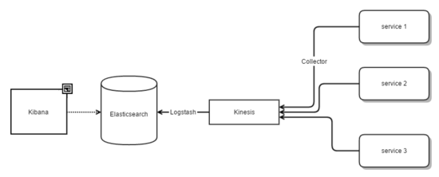
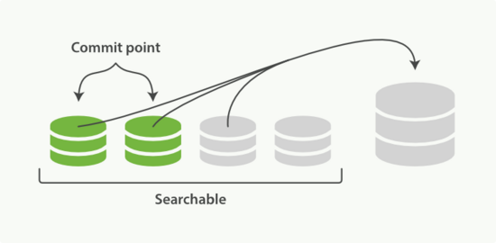
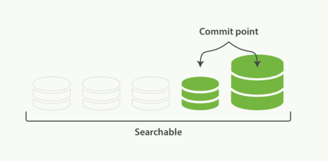

ELK是指elastic提供的一整套数据收集，存储，搜索，及展示方案。 由于部署及扩容方便，非常适合小团队快速搭建数据分析平台。ELK分别代指 Elasticsearch，Logstash，Kibana三个产品。
- E lasticsearch : 分布式，实时，全文搜索引擎，最核心的部分，也是接下来主要介绍的内容
- L ogstash : 非常灵活的日志收集工具，不局限于向 Elasticsearch 导入数据，可以定制多种输入，输出，及过滤转换规则
- K ibana : 提供对于 Elasticsearch 数据的搜索及可视化功能。并且支持开发人员自己按需开发插件。
ELK在广告系统监控中的应用
广告系统对于请求的响应时间非常敏感，此外，对于并发请求数要求也很高。因此，我们需要从请求响应时间，以及QPS两个指标，来检测系统的性能; 同时，为了定位瓶颈，我们需要把这两个指标，分拆到请求处理过程中的每个组件去看。
此外，为了优化全球用户访问的速度，我们在全球部署了多个节点。因此，整个系统不是在一个内网环境，对监控数据的实时收集提出了考验。
因此，我们需要一套灵活的监控统计库，能够非侵入的注册到业务代码中; 并且在一个统一的入口，实时监控每个节点的运行情况。

我们采用方案是:
- 每个节点，有一个 Collector，负责收集监控数据，按照节点/服务/时间维度做聚合，实时写入 Kinesis 队列
- Logstash 将 Kinesis 中的监控数据，实时导入到 Elasticsearch
- Kibana 后台上，通过定制查询图表，可以统计对比每个节点/服务/组件的监控数据
- 我们采用默认的 Logstash 日志导入策略，按天索引，使用 curator 工具，定期对历史数据删除/优化。
- 此外，通过 Watcher 插件，定制告警信息，从而在系统出现问题时及时处理。
这套机制，很好地满足了我们对于系统监控的需求，帮助我们分析，定位优化系统瓶颈。
Elasticsearch简介
Elasticsearch 是一个分布式，实时，全文搜索引擎。所有操作都是通过 RESTful 接口实现; 其底层实现是基于 Lucene 全文搜索引擎。数据以JSON文档的格式存储索引，不需要预先规定范式。
和传统数据库的术语对比一下，也许能够帮助我们对 Elasticsearch 有一个更加感性的认识
| RDS | Elasticsearch | 说明 |
|---|---|---|
| database | index | |
| table | type | |
| primary key | id | |
| row | JSON document | 文档是最基本的数据存储单元，因此也可以称 Elasticsearch 为文档型 NoSQL 数据库 |
| column | field | |
| schema | mapping | 可以支持动态范式，也可以将范式指定下来，从而优化对数据索引和查询 |
| index | (all) | 所有的字段都是被索引的，因此不需要手动指定索引 |
| SQL | query DSL | 不同于我们习惯的SQL语句，需要构造繁冗的JSON参数来实现复杂的数据统计查询功能 |
使用简介
所有操作都是通过RESTfull接口完成。请求URI指定了文档的"路径"。 注意到语义通过请求的HTTP方法不同区分开来:
- 创建
POST /{index}/{type} {"field": "value", ...} - 创建/更新
PUT /{index}/{type}/{id} {"field": "value", ...} - 判断一个文档是否存在
HEAD /{index}/{type}/{id} - 获取一个文档
GET /{index}/{type}/{id} - 删除
DELETE /{index}/{type}/{id}
说明一下 POST 和 PUT 的 区别 : POST 永远是创建新的。 PUT 可以表示创建，但是如果指定的URI存在，则含义为更新。换句话说，一个 PUT 请求，重复执行，结果应该是一样的。因此，在 Elasticsearch 的API， POST 表示创建新的文档，并由 Elasticsearch 自动生成 id ; 而 PUT 方法需要指定文档 id ，含义为"创建，若存在则更新"。
另外，需要提一下版本的概念。因为 Elasticsearch 中的文档是不可变的(immutable)，所以每个文档会有一个 版本号(version)字段，每次更新，实际上是将旧的版本标记未删除，并创建了一个新版本(版本号+1)。这个开销是很大的。因此，在实际使用中，需要尽量避免频繁的更新操作。
为了满足一些复杂的数据统计，仅仅上述的增删改查是不够的，为了充分使用 Elasticsearch的搜索功能，还需要学习 query DSL 的使用。query DSL 写起来比较复杂，这里仅仅列举一下和SQL关键字的对应。具体使用还得参考文档。
SQL | query DSL
------- | --------
= | {"term": {field: val}
IN | {"terms": {field: [val, ...]}
LIKE | {"wildcard:" {field: pattern}}
BETWEEN AND | {"range": {field: {"gt": val, "lt": val}}}
AND / OR / NOT | {"bool": {"must"/"should"/"must_not": ...}
Aggregations | {"aggs": ...}
JOIN | {"nestted"/"has_child"/"has_parent": ...}
随便列两个查询语句，感受一下:
SELECT * FROM megacorp.employee WHERE age > 30 AND last_name = "smith"
GET /megacorp/employee/_search
{
"query": {
"filtered": {
"filter": {
"range": { "age": { "gt": 30 } }
},
"query": {
"match": {
"last_name": "smith"
}
}
}
}
}
SELECT interests，avg(age) FROM megacorp.employee GROUP BY interests
GET /megacorp/employee/_search
{
"aggs": {
"all_interests": {
"terms": { "field": "interests" },
"aggs": {
"avg_age": {
"avg": {
"field": "age"
}
}
}
}
}
}
从个人的使用经验来说，熟练掌握 query DSL 的难度还是不小的 (毕竟大家都习惯的SQL的简洁直接)。此外，由于输入输出都是嵌套很深的JSON，解析起来也比较麻烦。为了降低使用门槛，一般都会有从SQL翻译的组件。比如Hive之于Hadoop，SparkSQL 之于 Spark。 elasticsearch-sql 这个项目，提供了类似了SQL翻译功能。
当然，Elasticsearch 最突出的地方在于对于全文搜索的支持。全文搜索的原理，以及在 Elasticsearch中具体如何全文搜索，这里略去不表。下面介绍下 Elasticsearch 集群的实现。
Elasticsearch 集群
Elasticsearch 是分布式的架构，可以通过新增节点的方式水平扩容，并提供一定的容错性。那么，它是怎么做到的呢? 我们一个一个概念，细细道来:
-
节点(node): 是一个独立的 Elasticsearch 运行实例。可以是一台机器上多个实例，当然更常见的选择是部署在不同的机器上。多个互通节点在一起组成了一个 集群 (cluster) 。不同于常见的master/slave集群架构，Elasticsearch 集群中的节点是同构的，每个节点都可以处理请求，并将自己不能处理的请求"重定向"到目标节点。
-
索引(index): 一个索引，分成了多个分片。当将文档写入一个索引时，根据id做切割，交由某个具体的分片去完成写入操作。因此越多的分片数，提供了更好的并发写入性能。分片数目在索引创建就不能更改。
-
分片(shard): 即一个 Lucene 实例，从数据库的角度来理解，可以视为一个分区(partition)。
-
镜像分片(replica): 分片由一个 主分片 (primary shard)，和可配置数目的多个镜像分片组成。
- 顾名思义，镜像分片 的数据内容和 主分片 保持数据同步。数据写入请求在主分片被完成，并由主分片将写入数据推送(push)到其镜像分片去。
- 在多节点集群里，同一分片的主分片和镜像分片被分散到了不同的节点。同一个分片里文档的查询请求，既可以在主分片所在节点完成，也可以在镜像分片节点完成。
- 此外，当主分片所在节点失效时，会将其中一个镜像分片提升为主分片。
- 因此，更高的分片镜像数目，提供了更好的查询效率，以及更好的容错机制。

如图，三个节点构成的集群。有两个索引(A，B)。每个索引设置为3个分片，每个分片镜像数为1:
- 由于镜像分片会在节点间充分平衡，因此，当任意一个节点失效时，都不会导致数据丢失
- 由于索引个分片均匀分布到三个节点，因此，写入时，总体上可以实现三倍每个节点的写入吞吐
- 对于每个索引的查询，都可以利用到每台节点的计算能力
Lucene 是怎么工作的?
前面我们提到，Elasticsearch 是构建在 Lucene 之上的。那么，Lucene (也就是每个分片) 是如何实现数据的实时写入和查询的呢?
一个 Lucene 由多个 segment 构成。每个 segment 自构建索引信息。在查询的时候，先由分发到每个 segment 执行，然后将结果汇总。数据写入时，是按照 segment 来组织的。为了提高写入速度，数据先写入内存，然后在定期刷回磁盘(commit)。
每个 segment 数据是不可变的，因此删除的时候仅仅标记为删除，相应的数据并没有彻底清除。在写入的过程中，会定期将 segment 的数据合并，在这个合并的过程中删除的数据才真正被清理掉。这也是为什么频繁更新会对性能不好的原因。最优的情况下，每个 Lucene 只有一个 segment，从而所有查询都不需要经过再次聚合。我们也可以手动触发 segment 合并，从而提高单个 Lucene 的查询性能。
写入以及合并的示意图:
 
如果要做类比的话，我们可以将写入理解为数据库系统 Write-Ahead-Logging (WAL) 的过程。只不过，这里写入的数据都是不变的，因此可以在写入的时候被非常高效地索引，并直接基于这些"日志"(即segments)查询。
索引维度的切割
由于每个索引是固定分片数的，为了优化查询，每个分片 (记得是 Lucene 实例) 索引的数据不能够无限增长。很多时候，我们的写入的是按天分的日志数据。一般的做法是，按天索引。在时间维度上利用索引进行分区，Logstash 默认为 logstash-2016-02-01，logstash-2016-02-02，... 这样按天分表。在查询的时候，可以指定多个索引查询，如 logstash-* 索引匹配。在有时间范围限定查询的时候，可以提前对于潜在索引过滤，从而减少执行查询所涉及的索引数目。这也是常见的数据库分区查询优化的一个手段。
参考
- Elasticsearch: The Definitive Guide 官方文档，啃透了 Elasticsearch 也就熟悉了
- Elasticsearch 實戰介紹 以及其后宝贵的引用